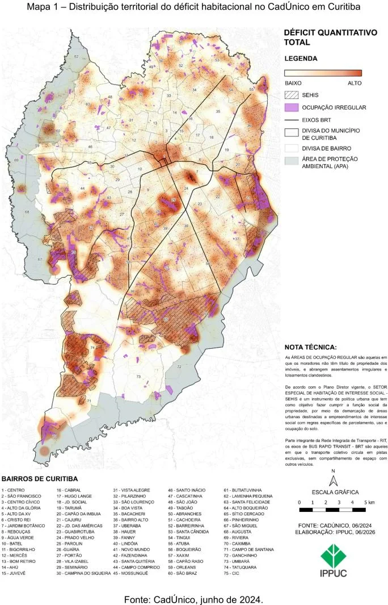
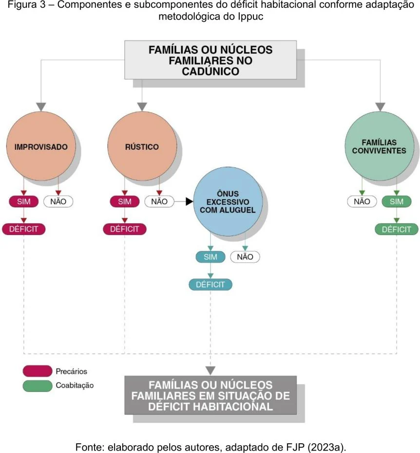

05 Projeto · Curitiba/PR
Déficit no Mapa
Análise intraurbana do déficit habitacional de Curitiba em 2024
Material independente de portfólio, baseado em IPPUC (2026), Déficit Habitacional em Curitiba 2024: Análise Intraurbana. Não é publicação oficial. O estudo é um trabalho coletivo, coordenado por Bruna Griguol, Érika Haruno Hayashida e Mônica Máximo da Silva.
Visão geral
O IPPUC levou a medida do déficit habitacional para dentro da cidade, adaptando o método nacional ao CadÚnico. Este estudo de caso apresenta o percurso da base administrativa ao mapa — seleção de cadastros, anonimização, geocodificação, limpeza, classificação hierárquica e distribuição territorial — e distingue claramente a responsabilidade institucional da contribuição individual. O resultado mostra que o aluguel domina o déficit e que a população em déficit é, comparativamente, mais pobre, mais feminina, mais negra e mais jovem que a média de Curitiba.
Problema
O déficit habitacional costuma ser medido para o país, os estados e os municípios a partir de pesquisas amostrais. Sem leitura intraurbana, o planejamento não sabe onde priorizar investimentos nem como fazer busca ativa da população em déficit.
Objetivo
Mostrar onde e como o déficit habitacional se manifesta dentro de Curitiba, adaptando o método da Fundação João Pinheiro a uma base administrativa de atualização contínua (CadÚnico) e territorializando os resultados por Regional e bairro.
Métodos e tecnologias
- Base: CadÚnico de Curitiba extraído em jun/2024 (Cecad), apenas cadastros atualizados; anonimização conforme a LGPD.
- Geocodificação dos endereços sobre o cadastro oficial de logradouros, com revisão manual dos casos abaixo do limiar de correspondência.
- Revisão de valores discrepantes com intervalo interquartil adaptado, caso a caso.
- Quatro subcomponentes classificados hierarquicamente (contagem única): domicílio improvisado, domicílio rústico, ônus excessivo com aluguel e famílias conviventes.
- Extração de indicadores e distribuição territorial por Administração Regional e bairro; mapas de concentração.
Fontes de dados
- IPPUC (2026). Déficit Habitacional em Curitiba 2024: Análise Intraurbana. ISBN 978-85-88226-25-8
- CadÚnico — base municipal via Cecad (Governo Federal), jun/2024, anonimizada e não publicada
- Município de Curitiba — cadastro oficial de logradouros
- Fundação João Pinheiro — método de cálculo do déficit habitacional; IBGE — Censo 2022 (comparação)
Os dados pertencem às respectivas fontes, com condições próprias de uso.
Minha contribuição
- Refinamento da adaptação metodológica, colaborando na definição dos componentes e subcomponentes do indicador.
- Participação na geocodificação e na revisão das bases; limpeza e preparação dos dados.
- Extração de indicadores e distribuição territorial por Regional e bairro.
- Produção e diagramação do Mapa 1 (déficit total); as bases preparadas também subsidiaram os Mapas 2 a 5 e parte dos gráficos.
Resultados
34.967
famílias ou núcleos familiares em déficit habitacional — 27,2% do universo analisado no CadÚnico; 84.743 pessoas.
88,4%
do déficit corresponde ao ônus excessivo com aluguel; habitação precária responde por 9,6% e coabitação por 2,1%.
64%
do déficit está em cinco Regionais — CIC, Cajuru, Bairro Novo, Tatuquara e Boqueirão —, com maior concentração nas periferias sul, sudeste e sudoeste e manchas na região central.
75
bairros apresentam ônus excessivo com aluguel; o déficit se concentra em ocupações irregulares, mas não se restringe a elas.
Mapas e gráficos
Clique na imagem para aproximar; arraste ou role para navegar.


Ampliar imagem

Ampliar imagemConsulte os demais mapas, gráficos e resultados no relatório completo disponível ao final desta página.
Limitações
- O CadÚnico cobre a população cadastrada, notadamente a mais vulnerável: a adaptação busca territorializar o déficit, não substituir a contagem absoluta do método original.
- Resultados referentes a junho de 2024; reassentamentos e regularizações posteriores podem alterar o quadro.
- O relatório não publica os parâmetros de geocodificação (exceto o limiar 80), os limiares de discrepância nem o número de registros excluídos em cada etapa.
Materiais completos
Estudo original do IPPUC
Estudo apresentado a partir do relatório; os dados administrativos do CadÚnico são anonimizados e não publicados, por isso não há repositório de código nem GeoPackage.
Estudo original do IPPUC (Abre em nova aba)